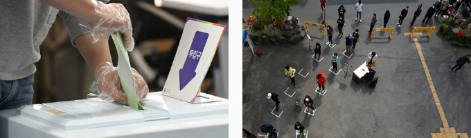

An Overview of COVID-19 in Korea and
Government Response
Government Response
Overview of COVID-19 in Korea
The first COVID-19 case in Korea was reported on Jan. 20, 2020. The number of confirmed cases increased exponentially after a community infection occurred in Shincheonji Church of Jesus in Daegu. However, as a result of intensive measures against the epidemic, active patient management, and all-out social distancing efforts by the public, the increase rate began slowing down. After recording a peak of 813 per-day new confirmed cases on Feb. 18, the number has gradually decreased, resulting in 10,537 confirmed cases in total as of Apr. 13. (Total tested: 518,743; positive: 2.1%; deceased: 217; recovered: 7,447; undergoing treatment: 2,873)
DRIVE THRU COVID-19 TESTING SITE
The idea of a drive-through screening system came from Kim Jin-yong, director of the Division of Infectious Diseases at Incheon Medical Center, which treated the first COVID-19 patient in Korea. It was first implemented in Kyungpook National University Chilgok Hospital in Daegu, followed by Yeungnam University Medical Center, also in Daegu, before going nationwide. Field worker input was taken into consideration, and as a result, the safety of both medical staff and patients was ensured while testing increased in speed.
Government Response
In response to the COVID-19 epidemic, the Korean government raised its infectious-disease alert from “Yellow” (Level 2, watch) to “Orange” (Level 3, alert) on Jan. 27, 2020 and established the Central Accident Investigation Headquarters (led by the Minister of Health and Welfare) within the Ministry of Health and Welfare. On Feb. 23, the alert was raised again to the highest “Red” level (Level 4, warning) and the Central Disaster and Safety Countermeasures Headquarters (CDSCHQ) was established, to be led by the Prime Minister towards ensuring pan-governmental control. The following actions were also taken
1. Preventive measures
1) Limit influx and block spread: On Feb. 4, 2020, “Special Entry Procedures” were implemented for inbound passengers from China. The scope of countries from which passengers arrive that are subject to this special procedure gradually expanded, including all countries by Mar. 19. All passengers arriving in Korea from Apr. 1 are now subject to a 14-day quarantine from the day they arrive
* Special Entry Procedures: mandatory temperature check, submission of special quarantine declaration and health questionnaire, downloading a self-diagnosis mobile app, etc.
1. Jung Eun-kyeong, Director of Korea Centers for Disease Control and Prevention (KCDC)
2. President Moon Jae-in
3. Fruit of Love delivery ceremony (Dec. 2019)
2. President Moon Jae-in
3. Fruit of Love delivery ceremony (Dec. 2019)
2) Early detection of infection to prevent spread
- Testing sites (drive-thru, walk-thru, etc.) provide better access to testing and diagnosis, and a large number of tests are done rapidly to detect infection at the early stages.
- When a person tests positive for COVID-19, the central and local government quickly traces contacts to track the source of infection and quarantine those who came in contact with the infected person. Family members, roommates and others found, through the epidemiological survey, to have come into contact with the confirmed case are required to self-quarantine for the 14-day incubation period.
- Testing sites (drive-thru, walk-thru, etc.) provide better access to testing and diagnosis, and a large number of tests are done rapidly to detect infection at the early stages.
- When a person tests positive for COVID-19, the central and local government quickly traces contacts to track the source of infection and quarantine those who came in contact with the infected person. Family members, roommates and others found, through the epidemiological survey, to have come into contact with the confirmed case are required to self-quarantine for the 14-day incubation period.
2. Prevention/Support
1) Social distancing: operation of national multi-purpose facilities suspended (e.g. libraries and museums), preventive cohort isolation of vulnerable social welfare facilities, school opening postponed (introduction of online classes), etc.2) * 5-day rotation system for mask distribution through designated sellers (e.g. post offices and pharmacies)
3) Emergency disaster relief fund: emergency relief funds from the central and local governments, childcare coupons, financial support for small business owners, etc.
* 5-day rotation system for mask distribution: As part of the government’s plan to stabilize the face mask supply announced on Mar. 5, 2020, this system allows people to purchase masks on designated days based on their birth years. It went into effect on Mar. 9, 2020 to cope with a surge in demand due to the increase in the number of confirmed COVID-19 cases.

Parliamentary elections were held as scheduled on Apr. 15 amid the COVID-19 pandemic.
Voter turnout for this general election was 66.2% - the highest in 28 years.
Voter turnout for this general election was 66.2% - the highest in 28 years.

international@chest.or.kr
Community Chest of Korea, All Rights Reserved
Community Chest of Korea, All Rights Reserved